05 走向成熟——中国经济即将V形反转
本章要回答两个看似不同、实则一体的问题：2007年以来的经济调整还要持续多久、有多深？未来中国经济增长靠什么、长什么样？答案都指向同一个关键——中国工业化进程能不能继续走下去。
从2005年开始，我们团队用罗斯托《经济增长的阶段》作框架，系统对比了美国、日本、法国、亚洲四小龙的工业化历史。最核心的感受是：中国的工业化起飞太经典了——经典程度超过了19世纪的欧洲小国和20世纪的亚洲四小龙，是我们认知范围内继美国之后最经典的大国工业化案例。正因为这种经典性，用工业化理论来研究中国经济的未来增长，越来越管用、越来越有解释力。
但中国和早期工业国（美国、欧洲）有一个根本性的不同：中国是在第二次全球化浪潮中起飞的，制造业深度嵌入全球分工体系，成了世界产业链的一个环节。日本当年起飞时，这种"共生模式"才刚刚成形，所以中日对比最合适——而中国对国际市场的依赖程度，比当年的日本还要严重。这是理解中国工业化特殊性的一个关键。
本章要回答两个问题：2007年以来的经济调整会持续多久、调整多深？未来中国经济增长靠什么、长什么样？这两个问题本质上是一个——中国工业化还能不能继续往下走。
从2005年开始，我们团队一直在用罗斯托的"经济增长阶段论"来跟踪中国。比对了美国、日本、法国、亚洲四小龙之后，我们最大的感受是：中国的工业化起飞太经典了，经典程度超过了19世纪的欧洲小国和20世纪的亚洲四小龙，是继美国之后最经典的大国工业化案例。
但中国有一个特殊之处：它是在第二次全球化浪潮中起飞的，制造业深度嵌入全球分工体系——这是早期工业化国家（美、欧）没有遇到过的。日本当年也面临类似情况，但中国对外依赖度比日本还高。
2007年，中国进入了工业化转折期（大部分工业国都经历过）。这个时期不确定性大增，增长能否持续越来越取决于制度。罗斯托说这是"机会与风险并存"的阶段。我们的核心观点：大型化和产业升级，是起飞之后的基本增长模式。
罗斯托把一国工业化分成四个阶段：起飞准备 → 起飞 → 走向成熟 → 大众消费时代。这个框架的核心就是对"起飞"的描述。罗斯托自己也承认，这个五阶段论不是绝对真理——它既要描述各国发展的共同规律，也要说明每个国家的独特之处。2007年我们用这个框架成功预测了中国经济的拐点，这大大增强了我们对它适用于中国的信心。信心来源：中国工业化的经典性太强了。
2004年以来，我们团队持续跟踪2000年之后这一轮经济中周期。用罗斯托理论来对标，结论很明确：中国确实在2000年正式进入了工业化起飞阶段。中国工业化的经典性，具体体现在以下五个方面。
阶段特征非常分明：1978-2000年是起飞准备期（以轻工业发展为主，完成原始积累），2000年起正式进入经济起飞阶段。这和所有经典工业国的节奏完全一致。
起飞的关键要素全部到位：固定汇率制度等标准配置一应俱全，为起飞提供了稳定的宏观环境。
主导产业非常清晰：房地产是起飞的核心主导产业，钢铁、造船等重化工业同步爆发。这是典型的"一个主导产业带动一群补充产业"的模式。
工业体系完整且有技术家底：在起飞过程中，铁路、工程装备等领域完成了扎实的技术积累。这一点对中国未来的产业升级极其重要——相当于已经有了"技术家底"，升级不是从零开始。
需求扩张的路径完全遵循经典规律：城市化加速→市场扩大→交通体系发展，这个"三位一体"的需求扩张模式，是所有工业国都走过的路，中国也不例外。
中国工业化起飞的经典性体现在五个方面：
① 阶段分明：1978-2000年轻工业发展=起飞准备+原始积累；2000年起=正式起飞。
② 要素齐备：固定汇率等起飞条件一应俱全。
③ 主导产业清晰：房地产是起飞主导产业，钢铁、造船等重化工业同步发展。
④ 工业体系完整：铁路、工程装备等领域的技术积累为未来产业升级打下基础。
⑤ 需求扩张规律一致：城市化加速→市场扩大→交通发展，和所有工业国一样。
正因为中国工业化的经典性，罗斯托的理论框架对中国未来的适用性很强。
但中国有一个美、欧、日都没有的特点：对外依存度极高。美国起飞时（1869-1893），外贸依存度只有12%-14%，GDP增速5%-6%；日本起飞时（1955-1965），外贸依存度21%，GDP增速8%-9%。而中国从2000年起飞以来，外贸依存度和经济增速都远超此前的任何工业国。这是工业化理论在当代面临的新课题。
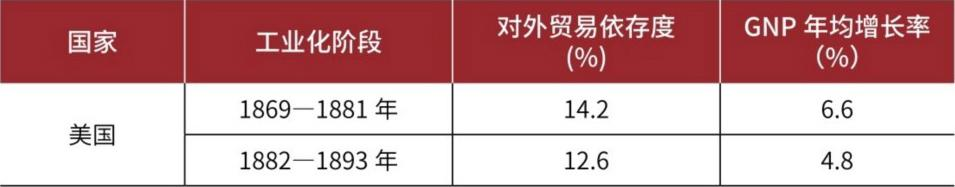
中日对比更说明问题：中国吸引外资远超当年日本，国内市场也更开放。但最根本的区别是——中国参与的是"生产要素型"国际分工（做劳动密集环节），日本参与的是"产品型"国际分工（做自主品牌）。这种高度对外依赖的起飞模式，利弊都很突出，是运用工业化理论时必须额外注意的。
总结：中国工业化将遵循共性规律（进入起飞萧条→走向成熟），但高度对外依赖会带来特殊影响——负面：① 代工模式导致创新动力不足；② 利益分配格局更复杂。正面：外部需求可能减少转型停滞（但也会带来剧烈波动）。
2007年下半年以来的调整不是普通的经济波动——它是中国自身中周期 + 世界第五次长波衰退的双重叠加。2008年就是长波衰退中最剧烈的阶段。我们认为，这次调整可能标志着中国工业化起飞阶段的结束。
罗斯托研究瑞典时发现：起飞是由少数几个部门的高速增长带动的，但由于投资过程的特性，这些部门一定会"发展过度"——这就是经济周期的本质。所以起飞通常以一场萧条来收尾。
怎么判断起飞结束？看这个国家有没有能力"重新组织资源、加速发展新的主导部门"。本质上，起飞就是靠固定资产投资拉动主导产业高速增长，一旦碰到资源或市场的天花板，投资必然收缩，萧条就来了。起飞的标志就是投资率最高的时期，之后投资增速会收敛。
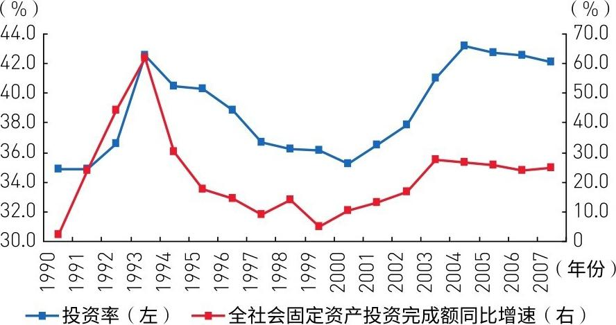
起飞伴随城市化加速。但当城市化率达到40%-50%，起飞结束进入走向成熟后，城市化会换挡：农村→城市的大迁移减速，取而代之的是发达地区的大都市化 + 欠发达地区的城市化扩散。美国1900年、日本1960年代都处于这个阶段。
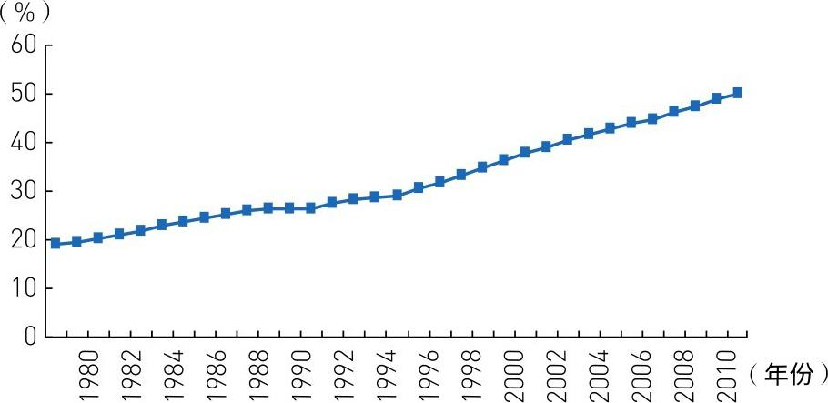
起飞结束意味着主导产业要换。罗斯托定义的主导产业有两个条件：① 创新或利用未开发的资源；② 高增长率+带动其他部门扩张。美国的铁路就是典型——降低运输成本→扩大出口→带动采煤、钢铁、机器工业。
中国的房地产近似于这样的主导产业（强关联性），但钢铁、有色、煤炭、通信、石化、设备等重化工业也是核心增长部门。
房地产之所以能成为主导产业，除了关联性强，还因为它利用了尚未开发的资源——低廉的土地成本。低成本=有效需求。但随着土地成本上升，房地产作为主导产业的地位会逐步衰减。成本优势的丧失，本身就是起飞结束的标志。
美国1890-1900年后铁路修建里程下降=起飞结束。中国同样面临原有主导产业增速见顶的问题。
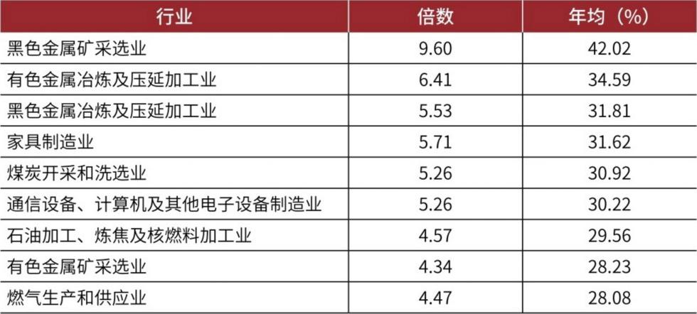
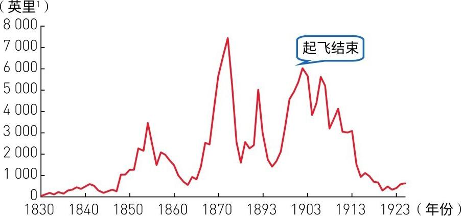
起飞不只是经济现象。伯纳姆一针见血："无论在何处，工业化的起飞阶段，都会是一个残忍和剥削的过程。"起飞的本质就是让财富向少数人集中，完成原始积累和再投资。这必然导致贫富分化加速。
但到了走向成熟阶段以后，贫富分化反过来会制约经济增长（穷人没钱消费，内需启动不了）。所以，贫富分化开始约束经济增长，是起飞完成的社会标志。
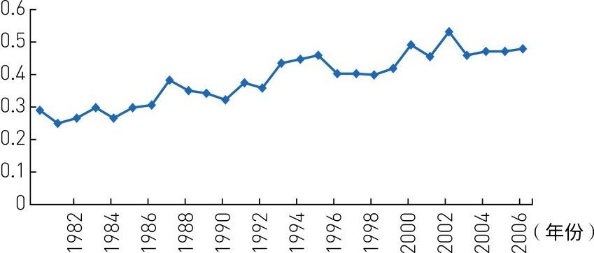
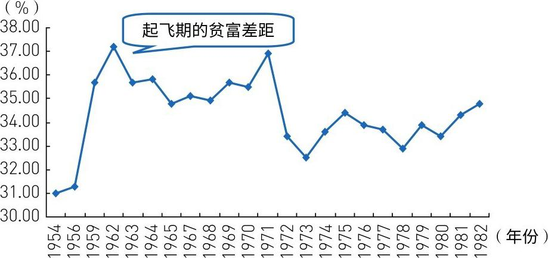
起飞结束时，资源约束和成本上升会引发对原有模式的反思。日本1962年就在《经济白皮书》中提出"转型论"，1965年萧条后（相当于2008年的中国），佐藤内阁提出"以稳定增长代替高速增长，把关心人放在第一位"。
但起飞结束也有光彩的一面——民族主义抬头。日本1964年新干线通车+东京奥运会，就是向世界展示成就的典型案例。民族主义抬头=起飞完成的标志。
综合以上分析，中国起飞结束、走向成熟的证据可以从实体经济和社会两个维度来总结：
·依靠固定资产投资拉动的经济增长遭遇资源制约，固定资产投资增速趋于收敛。
·城市化率接近45%，农村向城市人口的迁移减速，大都市化和城市化扩散展开。
·起飞的主导产业的最高速增长阶段可能终结。
·外需问题对工业国不一定具有普遍意义，但对中国来说相对重要。
实体经济四大信号：① 投资拉动碰到资源天花板，投资增速开始收敛——这是最核心的指标；② 城市化率接近45%，农村→城市的大规模迁移减速，取而代之的是大都市化和城市化向欠发达地区扩散；③ 房地产等起飞主导产业的最高速增长期可能已经过去；④ 外需问题对一般工业国不一定致命，但对中国格外重要（因为对外依存度远高于历史上的工业国）。
·民众的财富和福利要求提高，社会分配问题对经济的约束作用开始显现。
·针对原有模式的转型论出现。
社会层面两大信号：① 民众对财富分配和福利保障的要求明显提高——贫富差距开始对经济增长产生实实在在的约束（穷人没钱消费，内需启动不了）；② 针对原有增长模式的"转型论"开始出现——说明社会已经意识到老路走不下去了。
中国起飞结束的证据总结：
实体经济：① 投资拉动碰到资源天花板，投资增速收敛；② 城市化率接近45%，农村→城市迁移减速，大都市化+扩散开始；③ 房地产等主导产业最高速增长阶段结束；④ 外需问题对中国格外重要。
社会领域：① 民众开始要求财富和福利，贫富分化对经济的约束显现；② 转型论出现。
总体判断：这是一个"提供新的富有希望的选择的时期，也是一个带有危险性的时期"——罗斯托原话。
💡 核心观点：中国2007年以来的调整不是普通的经济周期下行，而是工业化起飞阶段的结构性终结。投资增速收敛、城市化换挡、主导产业见顶、贫富分化约束显现——四个信号同时出现，标志着中国即将从"起飞"进入"走向成熟"。
起飞萧条虽然剧烈，但恢复很快。日本1963年Q4开始调整，一年半后（1965年）迅速恢复，实际GDP一年就回到原位。韩国1980年转折期也出现负增长，随后强劲复苏。有意思的是，韩国1974年石油危机时的波动反而比1980年起飞萧条时温和——这说明对一个工业国来说，自身的工业化节奏才是主导因素，外部冲击是次要的。
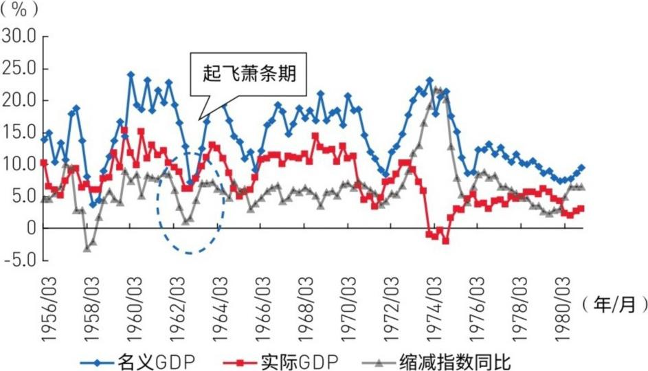
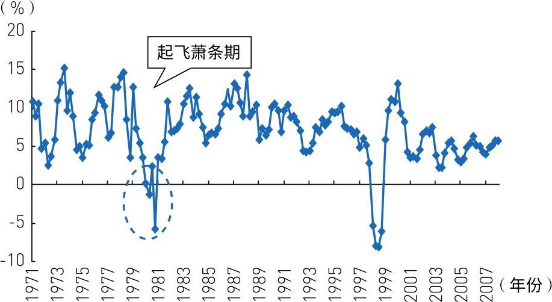
为什么起飞萧条能快速复苏？因为工业化和城市化的根本动力还在。日本1966年复苏主要靠内部投资+内部消费，净出口贡献不大。韩国1980年后复苏同样如此。工业化不完成，投资和城市化的发动机就不会熄火。
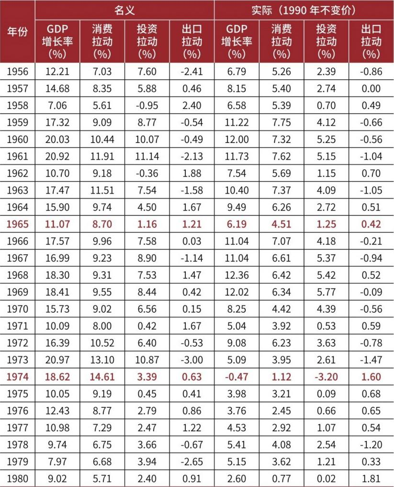
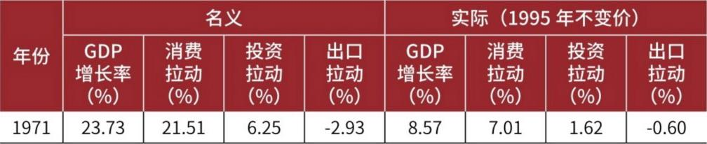
韩国1980年的问题和2008年的中国如出一辙：① 起飞过度投资→需求膨胀+流动性过剩→通货膨胀；② 重化工业快速发展→社会分配不公+贫富差距加大。韩国应对方案：经济自由化、改变重化工业优先政策、均衡发展、扶持中小企业和农业。1982年经济恢复。
日本则用了积极财政政策：发行特别公债+国税减税，被认为是60年代后期高速增长的原因。
一个重要提醒：工业化本身就是一国融入世界经济的过程。韩国1974年几乎没有受到石油危机冲击，而日本却遭遇了严重经济危机——同样的外部冲击，不同国家的结局完全不同。中国作为高度开放的经济体，必然面临广泛的国际冲击，这正是周金涛在《国际化博弈》报告中指出的核心问题。不能只看国内因素，国际冲击必须纳入分析框架。
关键判断：如果只看中国自身的起飞萧条，复苏会非常快。但工业化进程逃不掉世界长波周期的约束——罗斯托说一国完成工业化需要约60年，这期间必然经历长波的衰退和萧条。所以，必须把中国的起飞萧条放进世界第五次长波衰退的大背景里来看，才不会太悲观或太乐观。
我们对第五次长波的划分：繁荣期终点在2004年（不是2001年科网泡沫破灭——长波不只关乎创新，还关乎价格与增长的关系）。2004年之前，增长快但通胀不显著。2004年进入长波衰退后，2007年全球通胀问题明显加剧，1970年代那种"通胀+美元动荡+债务危机"的经典长波衰退特征全部出现。
经历了2008年油价暴涨暴跌和美国金融危机最凶险的阶段后，我们判断：长波衰退最剧烈的阶段基本结束了。这是看待2009年以后中国和世界经济的核心背景。
大国工业化与长波的"缘分"：美国起飞在第二次长波衰退期（1860s-1880s）；日本起飞在第四次长波繁荣期（1955-1965）；中国起飞在第五次长波繁荣→衰退过渡期（2000-2007）。
关键在于：每个工业国都会碰到衰退和萧条，但工业化的具体阶段与长波的哪个阶段重叠，结果大不相同。新加坡、韩国等小国可以在长波萧条期起飞，但没有大国能在长波萧条期起飞。
中日对比最关键的区别：日本起飞结束在长波繁荣顶点（1962-1966），之后又享受了8年高速增长（1966-1973）。中国起飞结束在长波衰退前半期，承受的是"工业化转折+长波衰退"双重打击——这就是2008年如此惨烈的根本原因。
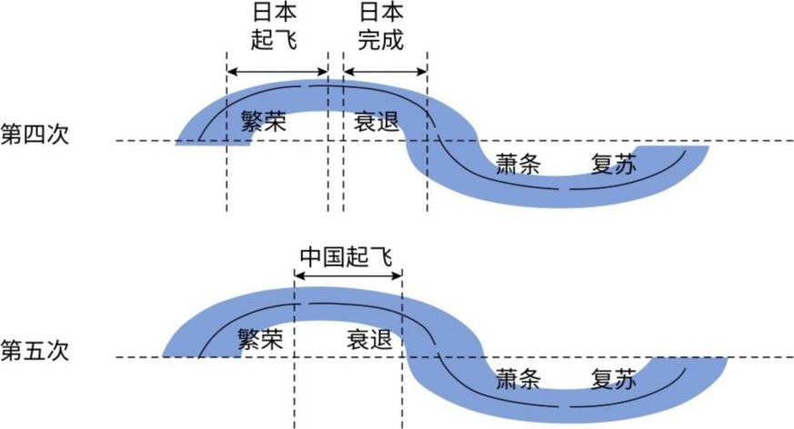
关于中国长期增长的两个结论：① 不必过分悲观——长波衰退仍处于长波上部波段，中国增长可以持续到长波萧条之前（2013或2015年）；② 但也不会像日本那样辉煌——日本是工业化快完成时才碰到石油危机，中国是刚起飞结束就碰上了，未来的工业化进程会弱于日本1966-1973年，但不会一蹶不振。
⚠️ 2015年左右长波萧条到来时，要高度警惕——历史上，大国工业化在长波萧条期基本都处于停滞状态。
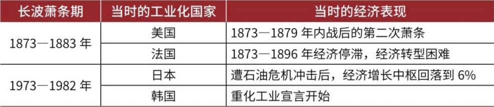
长波衰退最剧烈的表现=高通胀窒息经济增长。油价暴涨→高通胀→经济衰退→油价回落→一到两个季度后实际GDP见底。历史经验表明，这个GDP低点就是长波的最低点。
日本案例：石油危机造成的GDP低点，不但是工业化期间的最低点，也是整个第四次长波萧条结束前（1982年）的最低点。美国案例：1916年和1920年的GDP低点，都是1929年大萧条之前的最低点。通胀见顶后出现的GDP低点=长波最低点。
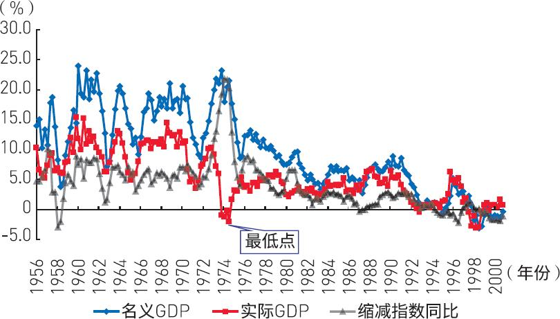
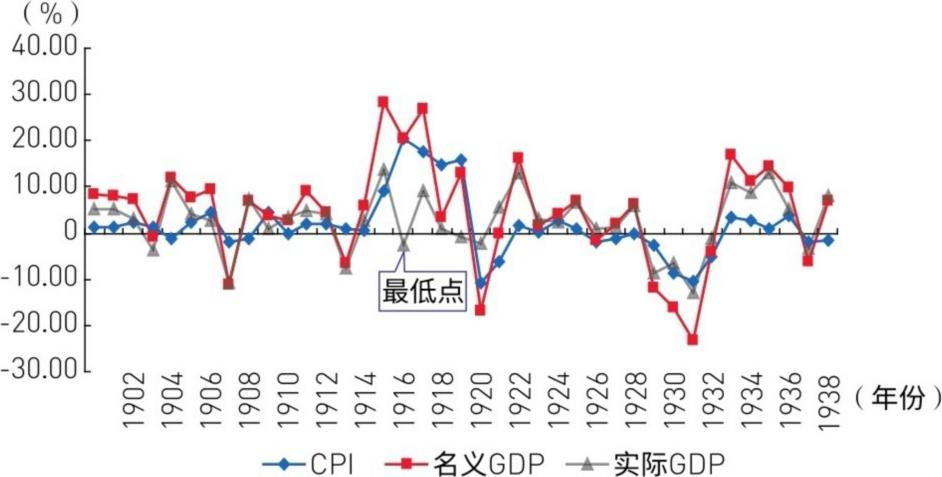
由此推断：2008年底或2009年Q1，中国将经历一个实际GDP的最低点——但这也是2013/2015年长波萧条之前的最低点。也就是说，最坏的时候即将过去。
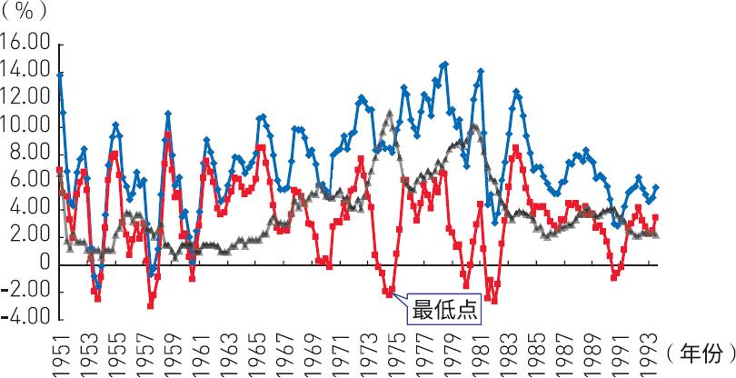
四个总结性判断：
① 中国正在经历的调整=起飞萧条+长波衰退双重叠加，深度很大（2008年Q3之后深有体会）。
② 通胀回落后，2008年底/2009年初将出现GDP最低点——但这是2013年之前的最低点。
③ 2009年调整过后，经济会迎来强劲复苏——由内需和投资带动。
④ 2013/2015年之前，中国工业化将继续推进，进入走向成熟的新阶段。
💡 核心预测（写于2008年11月）：2008年底或2009年初中国GDP将见底，随后迎来V形反弹。这个底部是长波衰退中的最低点。在2013-2015年长波萧条到来之前，中国经济将进入"走向成熟"阶段。事后验证：这正是著名的"V形反转"预判。
罗斯托对"走向成熟"的定义：把当时的现代技术有效应用于大部分资源。核心特征：工业多样化发展，新主导部门逐渐替代老主导部门。
举例：起飞阶段的主导是铁路→煤、铁、重型机械；走向成熟阶段的主导变成钢、新式船只、化工、电力、精密机床。瑞典从木材→木浆和造纸，从铁矿砂→优质钢和精密机械。走向成熟=增长扩散+新技术应用+走向精密制造。
按照我们的工业化阶段划分：美国走向成熟=1890-1900年，日本走向成熟=1965年左右。接下来的分析分两步走：第一步，用工业化指标验证中国当前（2008年）和当年的美国、日本确实处于同一阶段；第二步，通过美日在走向成熟阶段的增长经验，来推演中国未来经济的增长模式。
我们用五个指标（钱纳里-霍夫曼体系）来验证中国当前阶段=美国1890-1900年=日本1965年左右：人均GDP、三次产业产值比、制造业占比、城市化率、三次产业就业比。但具体衡量"走向成熟"的特征，要从更宽的角度看——投资率、产业结构、城市化率才是关键，人均GDP因汇率折算问题只具有标志意义。
起飞=固定资产投资拉动增长的阶段。美国资本形成最高峰在1889-1898年，之后逐期下降=起飞结束。日本投资增长率高峰在1960年附近，资本积累高峰在1970年附近。中国投资率过高且碰到瓶颈，投资最高速增长的阶段显然已经过去了，这一点类似美国1900年和日本1965年。
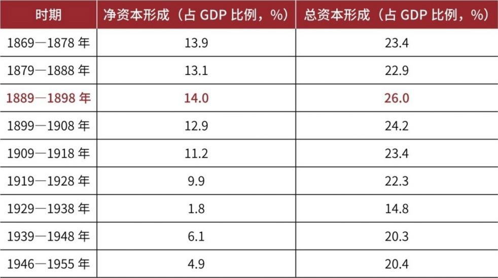
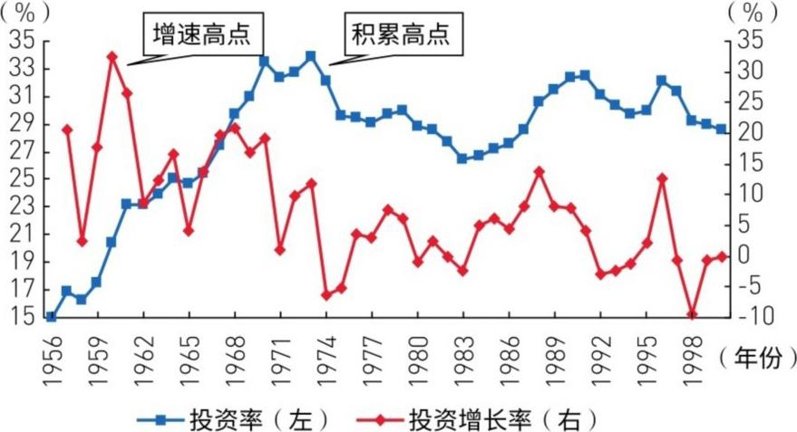
⚠️ 重要细节：起飞结束后，投资增速高峰过了，但投资率（投资占GDP比重）还在上升。日本投资率拐点出现在1972年（工业化后期）。即使没有石油危机，日本高速增长时代也会终结。但中国还没到那个阶段——工业化的原动力还在，投资拉动模式不会立即改变，财政政策依然有效。
城市化在走向成熟阶段不是减速，而是换挡：① 农村→城市的大迁移减速；② 大都市化启动（人口向核心都市圈集中）；③ 区域间城市化率差异达到顶峰后开始缩小——落后地区加速城市化。
美国1910年东北部城市化率已达75%（饱和），但南部和西部还在加速。区域差异在1910年达到峰值，之后开始缩小=走向成熟阶段的典型特征。
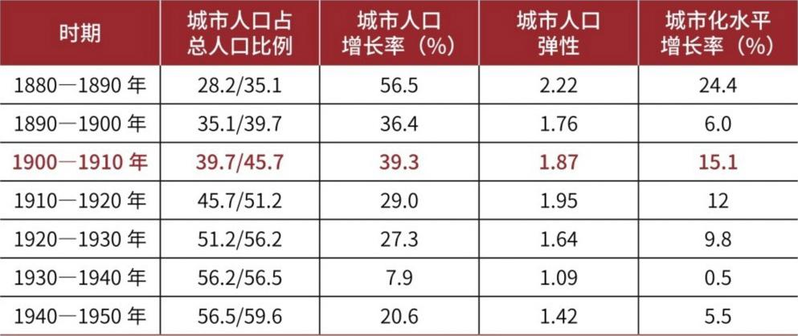
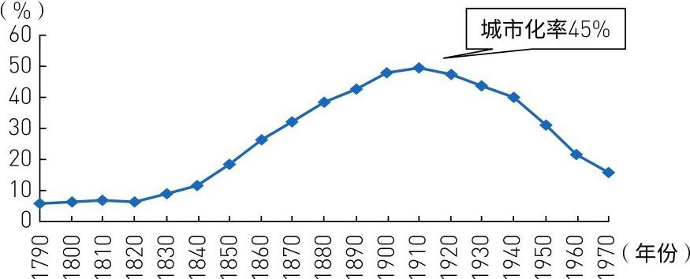
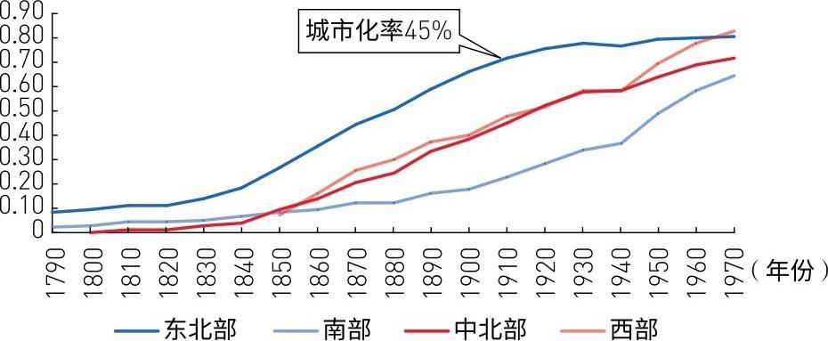
城市化速度仍然处于高峰期——日本城市化增速拐点在1970年（城市化率超过50%之后），美国也一样。走向成熟阶段，城市化的原动力仍然强劲。
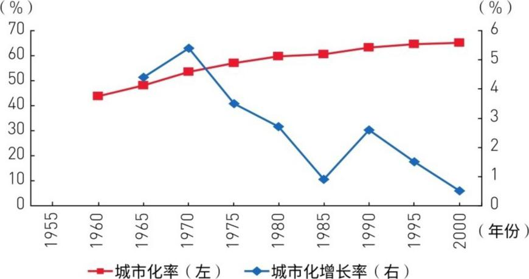
库兹涅茨发现：工业化期间是产业结构变动最剧烈的时期。中国当前的产业结构处于工业化中期，但已有向后期过渡的特征——这进一步支持"走向成熟"的判断。
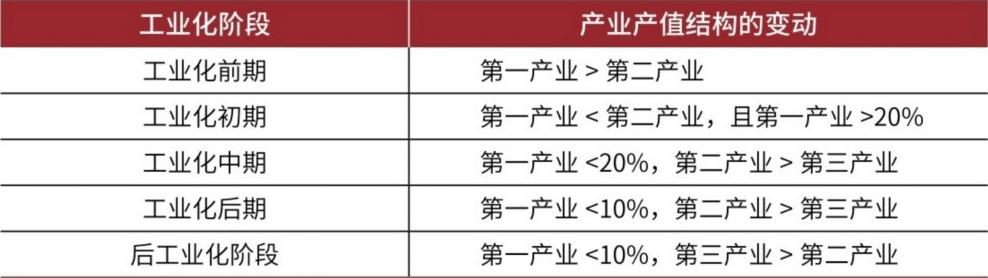
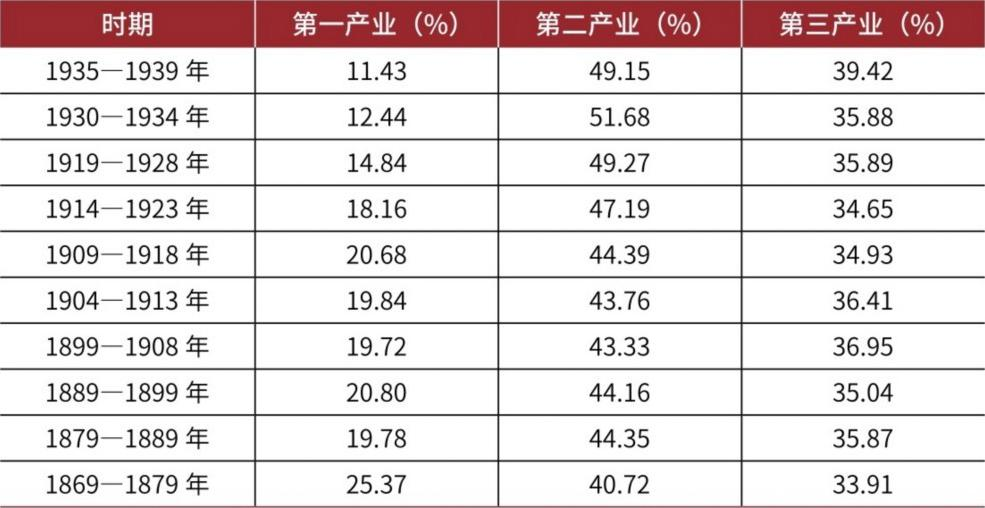
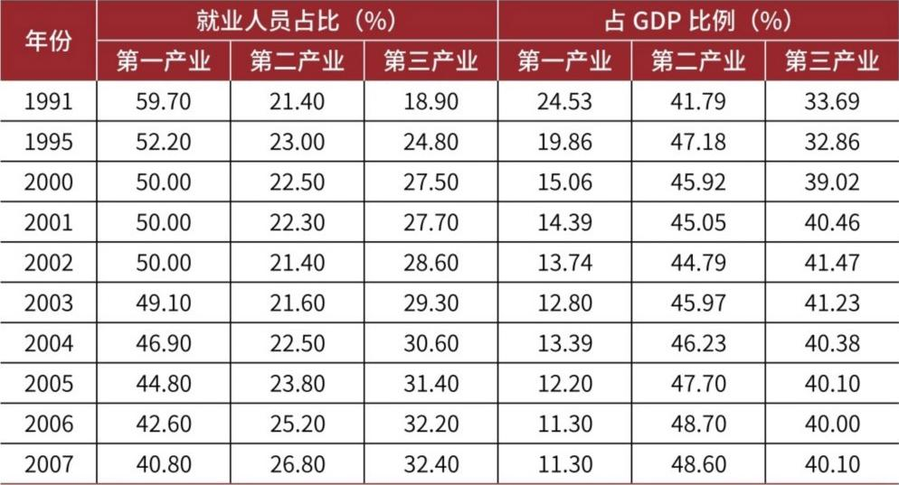
科迪指标（制造业增加值占物质生产部门增加值比重）衡量的是产品的加工程度——加工程度越高，工业化越先进。中国当前的科迪指标类似美国1900年的水平。
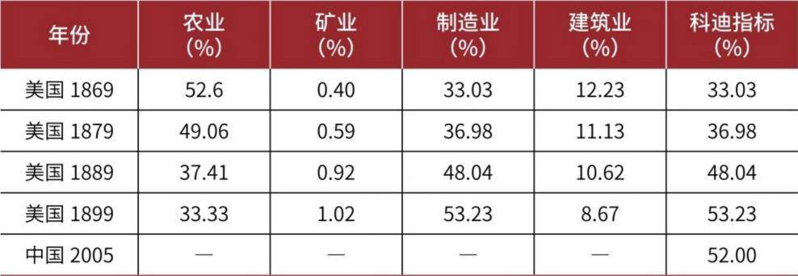
人均GDP只是工业化的结果而非原因——真正的原动力还是投资和城市化。以汇率平价法折算，中国2005年人均GDP 4137美元≈工业化中期。日本1962-1966年人均GDP 641-1072美元（1964年价格）≈工业化中期向后期过渡。人均GDP数据也支持"中国≈日本1962-1966年"的判断。
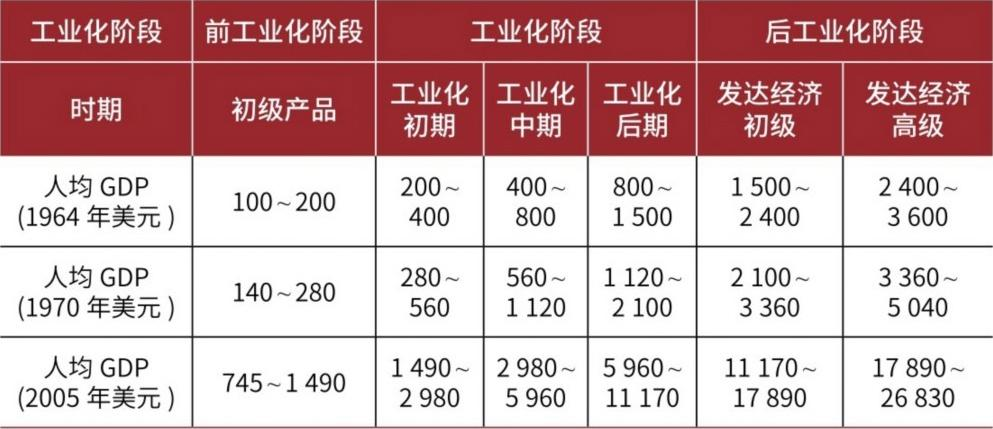
💡 多维验证结论：从资本积累、城市化、产业结构、制造业加工程度、人均GDP五个维度交叉验证，中国当前（2008年）的工业化阶段≈美国1890-1900年≈日本1962-1966年，正站在"走向成熟"的起点上。原动力（投资+城市化）仍在，但主导模式正在换挡。
前面已经论证了：中国2008年的工业化阶段≈美国1900年≈日本1965年，正站在"走向成熟"的起点上。那么，走向成熟阶段到底有什么特征？接下来我们对罗斯托的理论做一个总结性梳理，看看中国即将进入的是一个什么样的新阶段。
走向成熟 ≠ 工业化结束，而是工业化的扩散期。投资拉动模式依然持续（但增速窄幅波动），城市化仍在加速（但结构变化）。正因原动力还在，起飞萧条才能快速恢复。
走向成熟期的产业特征=工业向多样化发展，新主导产业逐步替代老主导产业。工业化初期的分工是"量变"，中期是"质变"，后期是"新的量变"。这个阶段的实质=社会分工细化+中游产业膨胀=装备业繁荣。
日本1960年代前期：大企业的技术革新和现代化逐渐扩散到中小企业和流通部门。关键是：这种扩散不是以旧产业衰落为代价的。钢铁等旧主导产业与装备等新主导产业同时增长。这背后是以设备投资为核心的生产效率提升。走向成熟前期=设备投资+旧主导产业共同繁荣。
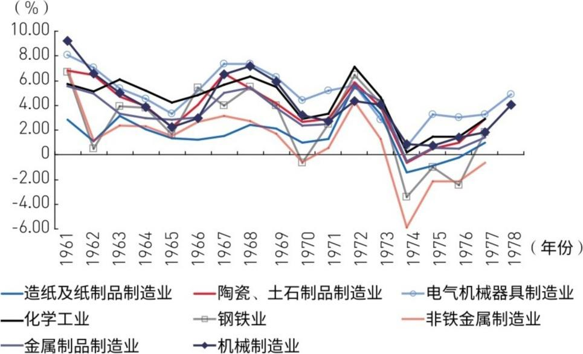
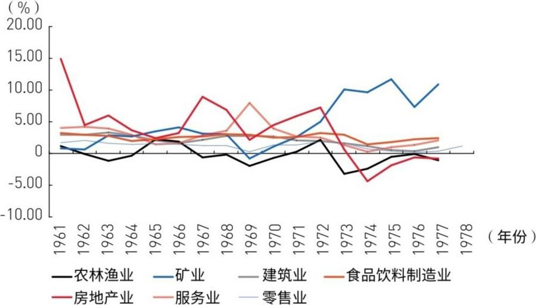
主导产业更迭是长期过程，不是一次萧条就能完成的。整个走向成熟阶段都是产业升级的过程，但这不等于经济增长模式马上换挡。走向成熟本质上是一个过渡阶段。
走向成熟的另一个特征：区域扩散。美国1880年后，老工业区新英格兰增速放缓→走向高精加工；中东北部（俄亥俄、印第安纳等）崛起。日本1960年代太平洋沿岸工业向地方分散。产业从核心区向欠发达地区转移，是走向成熟阶段的普遍规律。
基于这种认识，中国未来经济增长将呈现区域扩散特征——劳动密集型产业向工业化相对落后的中部和东北部转移。
日本走向成熟阶段的生动写照："1.5万吨的高炉变成5万吨，5万吨的乙烯设备变成30万吨。"大型企业合并浪潮是60年代后半期的标志——八幡+富士=新日铁，三菱三个重工合并，银行合并……大规模合并确立了日本经济的国际竞争力。
起飞阶段的投资=开发新产业、新产品。走向成熟阶段的投资=在已有技术基础上扩大规模、大型化设备。这是资本集中的必然结果。
美国同样：19世纪末20世纪初第一次并购浪潮=走向成熟的标志。1901年并购高潮，钢铁行业集中率高达78.8%，造纸71%，运输设备57.3%。
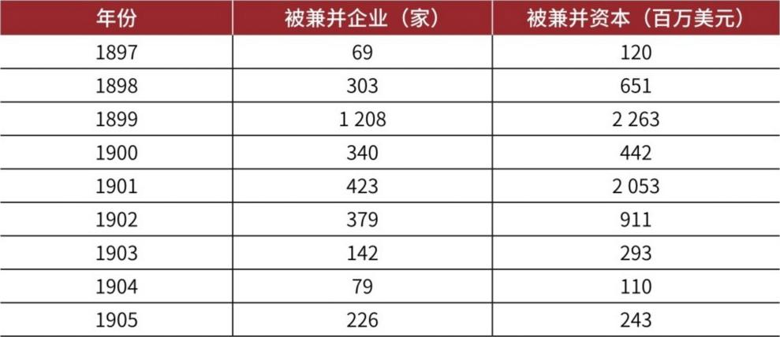
中国未来的核心判断：上游产业的大型化势不可挡，并购+大型化带来的企业繁荣=走向成熟阶段的重要投资主题。
走向成熟阶段是政策导向极其关键的时期。罗斯托说它"提供新的富有希望的选择，也带有危险性"——危险来自民族主义和贫富分化。
成熟阶段有三个可能方向：① 追求国际势力和影响；② 建设福利国家；③ 走向大众消费时代。任何国家都是三者的组合。
三大关键政策：① 推动成熟产业大型化；② 促进技术扩散和自主创新；③ 改革分配制度、顺应大众财富要求——这是核心中的核心。分配政策改革是走向成熟阶段最危险也最重要的课题。
大都市化=走向大众消费时代的关键环节。美国1910年后从走向成熟→大众消费时代，大都市化是核心驱动力。1920年代美国人口增长16%，城市中心人口增长22%，郊区人口增长44%——大都市化对扩大内需至关重要。日本大都市化也始于1965-1970年（走向成熟阶段）。
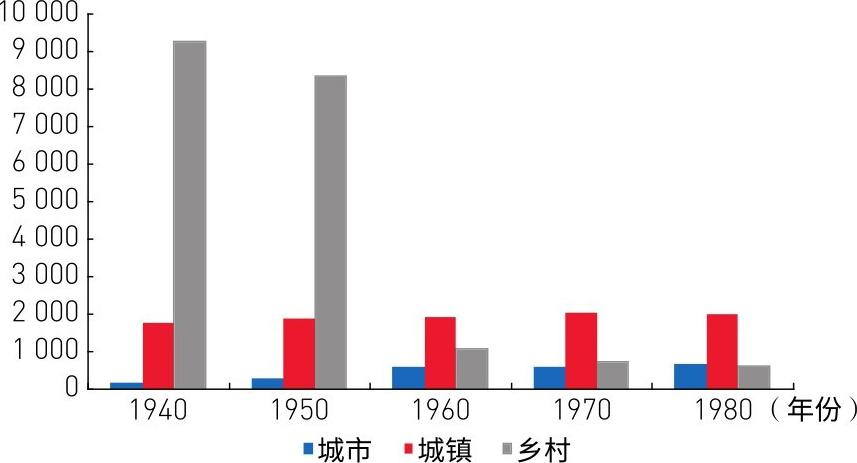
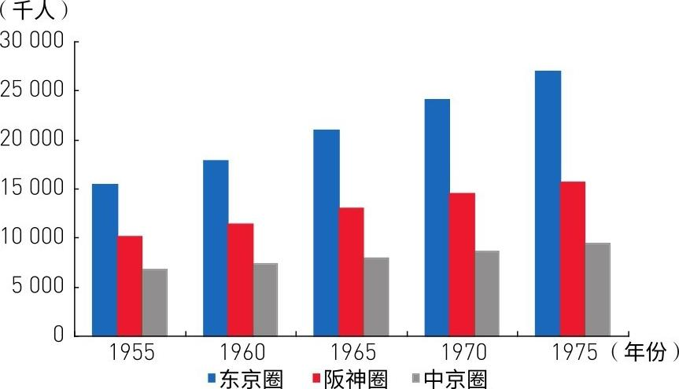
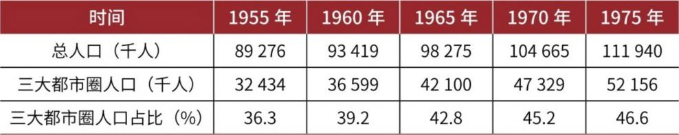
大都市化启动内需的三个机制：① 耐用消费品普及率加速上升，从一般耐用消费品升级到高档；② 必需消费品（食物等）占比持续下降，恩格尔系数走低；③ 服务性消费支出随城市化快速上升。
预测：2010年左右中国将出现"刘易斯拐点"——新增劳动力低于需求，劳动力价格开始快速上涨。城市化从"农村→城市"的粗放阶段，进入"小城镇→中心城市"的深化阶段。这和大都市化的逻辑完全一致。
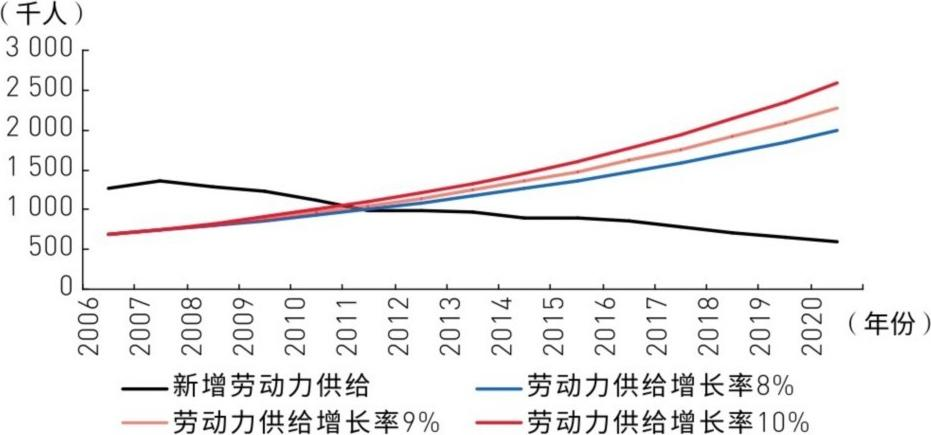
理解城市化推进方向=理解未来增长模式和产业选择的关键。
关键总结：扩散≠转折。投资和城市化的加速仍然处于高位，增长的原动力还在。中国2010年后的经济增长，是在原有模式基础上不断改进——投资拉动不会消失，但会不断"改良"。
重化工业没有走到尽头——它是在高速增长中提升效率。经济大型化更多是资本集中的结果，而非产业生命周期的自然演进。
中游膨胀（装备业繁荣）是走向成熟的必然方向，但与大型化相伴。未来公司繁荣的本质=产业组织变革——不只是企业做大，而是企业之间的关系在变。
区域扩散是确定的趋势，要关注欠发达地区。但成长的前沿仍然是东部核心区——投资机会需要兼顾核心和扩散两条逻辑。
政策在走向成熟阶段怎么强调都不为过——政策导向决定工业化是成功还是停滞。必盯三类政策：① 产业政策（创新、节能环保、并购）；② 分配改革政策（改变分配不均、福利化）——这是推测政策方向的核心思维框架。
凯恩斯主义的扩张政策（财政刺激）依然有效——中国工业化阶段使然。但需要结合长波衰退的背景来评估政策效果。
经历上述过程后，中国经济将走向"公司繁荣"——源于资本积累和产业结构变更。虽然公司繁荣更多出现在走向成熟后期，但起点必然是大型化和多样化。
"公司繁荣"≠"行业繁荣"。行业繁荣是全行业鸡犬升天（比如起飞期的房地产和钢铁，大公司小公司都赚钱）。公司繁荣=行业增速放缓后，优秀公司靠并购、创新和全球化脱颖而出。这不是一个自下而上的选股概念，而是对整个增长方式转变的理解——微观主体（企业）在经济中发挥更大作用。
韩国1980年转折期的经验：财政支出拉动+政府保护+产业政策支持并购+培育国际竞争力+引进外资技术。韩国公司繁荣=从引进外资到向外发展的过程。
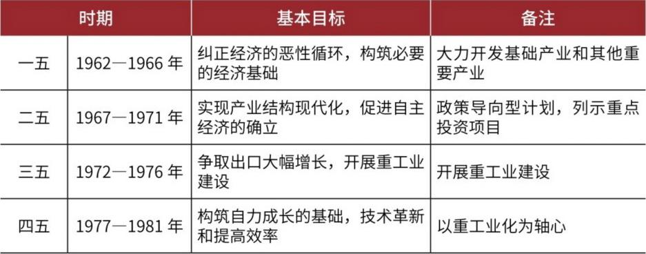
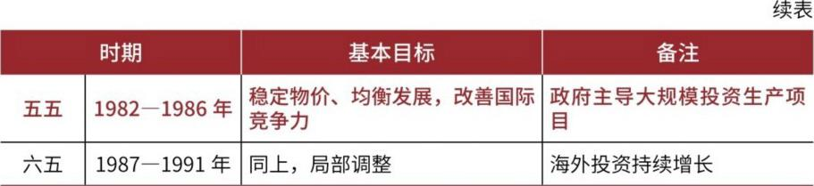
韩国经验的核心启示：大型经济刺激计划不只是刺激经济，它从根本上改变经济结构。具体机制：经济下滑→大量企业倒闭→政府出台刺激计划→有实力的企业获得长期资金活下去→倒闭企业释放的产能和市场被活下来的企业占据→危机过后，大企业开始出现。公司繁荣的起点=大型化。中游繁荣（多样化）则是更漫长的过程。
日本1960年代的产业图景：少数巨大企业 + 大量小企业。小企业的共同特征：加工程度高。其中脱颖而出的中等规模企业被命名为"中坚企业"——它们是产业组织变革的产物：主导行业快速发展+宽松金融政策+流通革命和技术革新+个人消费多样化→部分有研发能力的中小企业抓住配套生产机会，成长为独立于大企业的新型企业。
大企业（八幡、富士、日立、东芝、丰田、日产）扶植大量承包公司和零部件厂家，通过企业间交易维持高质量。这个过程出现了分化——有的中小企业发展壮大，有的消亡。竞争导致中小企业更新换代，造就了敢于挑战技术革新的"中坚企业"。
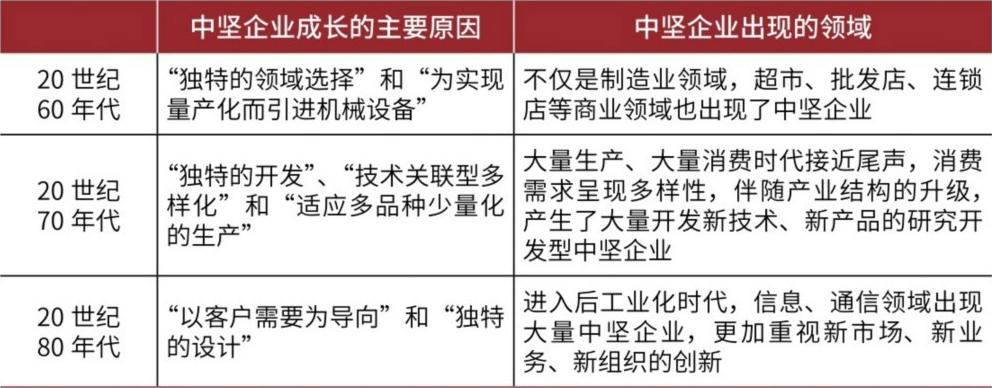
中坚企业的成长=中游膨胀=产业升级。它伴随着产业组织的深刻变革——大企业发展带动相关中小企业发展。战后日本经济奇迹离不开大企业与中小企业之间建立的新型共生关系。
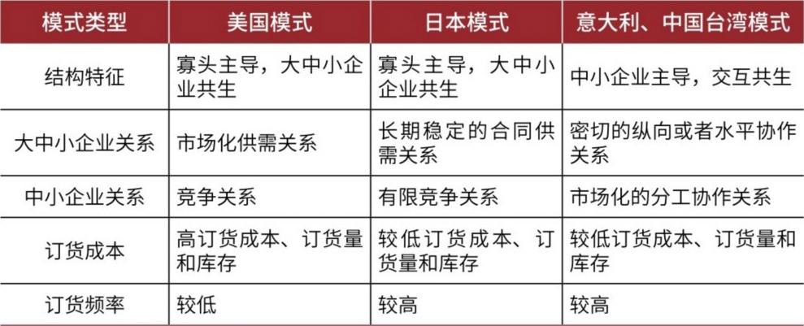
这篇写于2008年11月的文章，是周金涛运用罗斯托工业化理论对中国经济做出的最重要判断之一。其核心逻辑链如下：
1. 中国工业化起飞极其经典——1978-2000年起飞准备，2000年起正式起飞，房地产为主导产业，重化工业全面爆发。经典程度超过19世纪欧洲小国和20世纪亚洲四小龙，仅次于美国。
2. 但起飞已经结束——四个信号：投资增速收敛、城市化率接近45%换挡、主导产业增速见顶、贫富分化开始约束经济。起飞萧条与第五次长波衰退叠加=2008年的剧烈调整。
3. 起飞萧条会快速复苏——日本和韩国的经验都表明，起飞萧条后一年半左右经济就能恢复，因为工业化和城市化的原动力还在。预计2008年底/2009年初中国GDP见底，随后V形反转。
4. 之后进入"走向成熟"阶段——中国≈美国1900年≈日本1965年。走向成熟=工业化的扩散期，核心特征：① 产业扩散+装备业繁荣（中游膨胀）；② 区域扩散（产业向中西部转移）；③ 经济大型化（并购浪潮）；④ 大都市化（郊区化+大众消费时代准备）。
5. 投资主线：从"行业繁荣"到"公司繁荣"——行业鸡犬升天的时代结束，优秀公司通过并购、创新和全球化脱颖而出。"大型化"是公司繁荣的起点，"中坚企业"的成长是最值得关注的结构性机会。
6. 政策是最大变量——分配制度改革是走向成熟阶段最核心的政策课题，决定了工业化能否顺利推进到大众消费时代。
💡 历史验证：这篇文章发表于2008年11月（金融危机最恐慌的时刻），精准预测了中国经济的V形反转——2009年Q1 GDP见底后强劲反弹。同时预判了2010年刘易斯拐点、大都市化加速、并购浪潮、产业向中西部转移等此后十年间的核心趋势。"走向成熟"框架成为理解2010年代中国经济的经典范式。
| 原文术语 | 白话解释 |
|---|---|
| 罗斯托《经济增长的阶段》 | 美国经济史学家罗斯托1960年出版的经典著作，把一国经济发展分为五个阶段：传统社会→起飞准备→起飞→走向成熟→大众消费时代 |
| 起飞（Take-off） | 工业化最关键的阶段，由少数主导产业的高速增长带动整个经济腾飞，固定资产投资占GDP比重达到最高峰 |
| 走向成熟（Drive to Maturity） | 起飞之后的工业化扩散阶段，工业向多样化发展，新技术广泛应用于大部分资源，新主导部门逐渐替代老主导部门 |
| 起飞萧条 | 起飞阶段结束时的经济萧条——因为投资过度+资源/市场制约，主导产业增速见顶，经济经历一次深幅调整 |
| 主导产业 | 起飞阶段带动整个经济增长的核心产业（如美国的铁路、中国的房地产），特点是创新性强、关联度高、增速快 |
| 长波（康德拉季耶夫周期） | 约50-60年的超长经济周期，分为繁荣→衰退→萧条→回升四个阶段 |
| 中周期（朱格拉周期） | 约9-10年的经济周期，主要体现为资本支出的周期性波动 |
| 对外贸易依存度 | 进出口总额占GDP的比重，衡量一国经济对国际市场的依赖程度 |
| 科迪指标 | 制造业增加值占物质生产部门（农林牧渔+采矿+制造+公用事业+建筑）增加值的比重，衡量产品加工程度 |
| 基尼系数 | 衡量收入分配差距的指标，0=完全平等，1=完全不平等 |
| 刘易斯拐点 | 劳动力从过剩转为短缺的转折点，此后工资开始快速上涨 |
| 恩格尔系数 | 食品支出占消费总支出的比重，越低说明生活水平越高 |
| 大都市化 | 人口从农村向城市迁移减速后，城市化进入新阶段——人口向核心大都市圈和郊区集中 |
| 中坚企业 | 日本经济学术语，指从中小企业中脱颖而出、具有技术创新能力和独立性的中等规模企业 |
| 产业组织 | 产业内部企业之间的关系结构，包括大企业与中小企业的协作、竞争、并购等 |
| 横向兼并 | 同行业企业之间的合并（区别于上下游之间的纵向兼并），目的是扩大规模、提高市场集中度 |